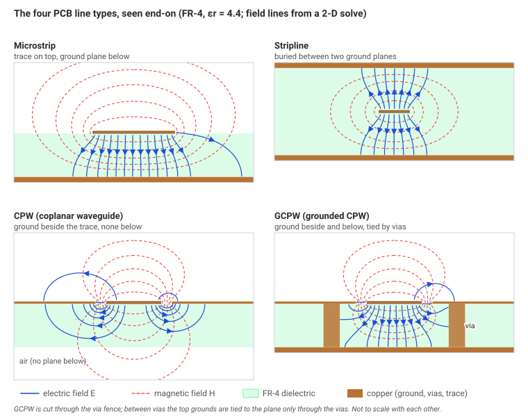
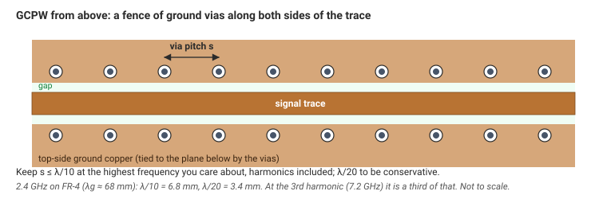
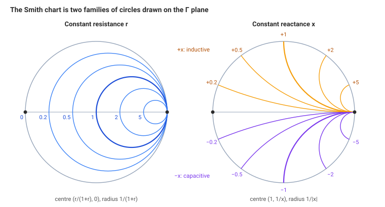
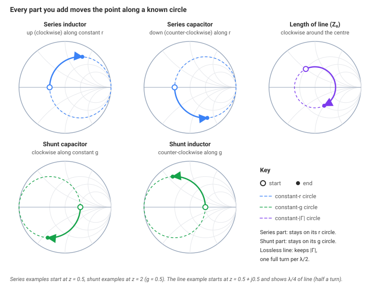
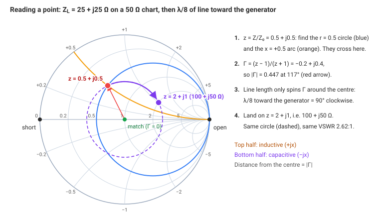
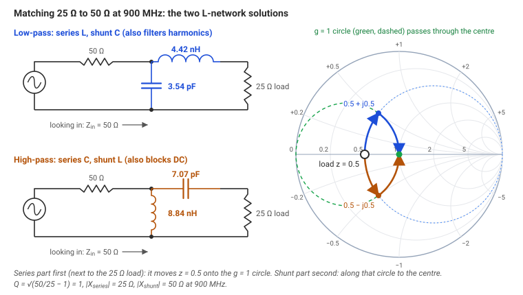
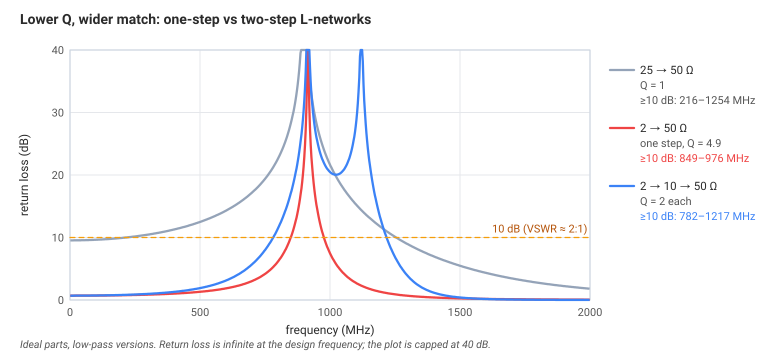
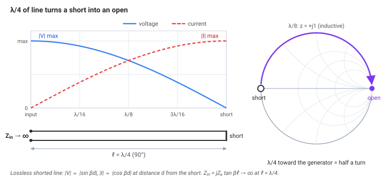
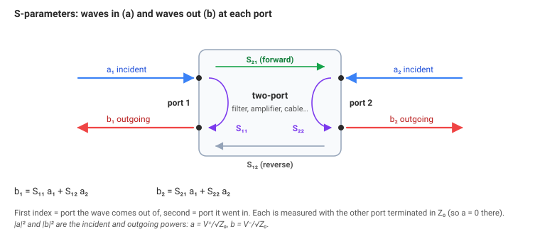
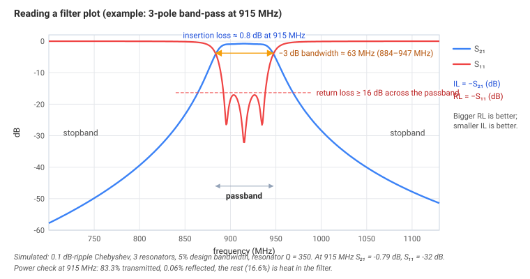

Transmission lines and matching
Module 1 found reflections. This module controls them: which line to use, how to read the map of Γ, and how a few parts or a length of line can make a load look like 50 Ω.
What's covered
- Which field shapes a line can carry, and the frequency where a second shape appears.
- Microstrip, stripline, CPW and grounded CPW, and how close the via fence has to be.
- The Smith chart as the unit disc of Γ, and why a length of line spins the point.
- Matching with an L-network or a quarter-wave section, and why a high-Q match is narrow.
- S-parameters as power in and power out, and what return loss and insertion loss are saying.
Planned walkthrough of this page (≈ 40 min):
- Modes, and the frequency where a line stops being simple
- The four PCB lines and the via fence
- The Smith chart, from Γ
- A complex load, and where the standing-wave null moves
- L-networks, both of them
- The quarter-wave transformer
- S-parameters and bandwidth
Propagation modes
A mode is one shape the electric and magnetic fields can hold while they travel. A line is simple only while a single shape is allowed. A second shape, once it can fit, takes some of the power and the one-number description \(Z_0\) stops being the whole story.
- TEM (transverse electromagnetic): E and H both point across the line, with nothing pointing along it. It needs two conductors, the signal and the return, and it works down to DC. Coax and stripline carry TEM.
- Quasi-TEM: almost that. Microstrip and coplanar lines have part of the field in the air and part in the board, so a pure TEM wave cannot exist, but \(Z_0\) and \(\varepsilon_\text{eff}\) still describe it well. The small difference makes \(\varepsilon_\text{eff}\) creep up a little with frequency. That creep is dispersion, and it is why phase delay and group delay come apart in a filter (Module 1).
- TE and TM: one of the fields has a component along the direction of travel. These live in a hollow pipe with no centre conductor. They exist only above a cutoff, where the pipe is wide enough for the wave to fit.
For a rectangular air-filled guide of inside width \(a\) and height \(b\), each mode has a cutoff
WR-90 waveguide has \(a = 22.86\) mm. With \(c = 3\times 10^8\) m/s, \(f_c = 3\times 10^8 / (2 \times 0.02286) = 6.56\) GHz. It is used from 8.2 to 12.4 GHz, above TE₁₀ and below the next mode.
TEM lines have no lower cutoff. They do have an upper one, where the next mode fits:
- Coax. The first extra mode is roughly \(f_c \approx c / (\pi \sqrt{\varepsilon_r}\,(D+d)/2)\). An SMA connector (\(D \approx 4.2\) mm, \(d = 1.27\) mm, PTFE \(\varepsilon_r = 2.05\)) reaches that near 24 GHz, which is why SMAs are rated to 18–26.5 GHz.
- Microstrip. On a thick board, energy can leak into a surface wave in the dielectric slab. A rough threshold is \(c / (4 h \sqrt{\varepsilon_r - 1})\): about 25 GHz for 1.6 mm FR-4 with \(\varepsilon_r = 4.4\). High-frequency boards are thin partly for this reason.
Microstrip, stripline, CPW and GCPW
On a board the choice is where the fields go. That decides the loss, how much the line radiates, and whether a part can sit on the trace.

The four PCB lines, end on. Microstrip and CPW leave part of the field in the air. Stripline keeps it inside the board. Grounded CPW adds a plane below, tied to the side grounds by vias.
| Microstrip | Stripline | CPW | GCPW | |
|---|---|---|---|---|
| Where | top layer, ground below | buried between two grounds | top layer, grounds beside it | grounds beside and below |
| Mode | quasi-TEM | true TEM | quasi-TEM | quasi-TEM |
| \(\varepsilon_\text{eff}\) | between 1 and \(\varepsilon_r\) | \(= \varepsilon_r\) | between 1 and \(\varepsilon_r\) | between 1 and \(\varepsilon_r\) |
| Radiation | some | almost none | some | low, if the fence is tight |
| Parts on the line | easy | needs a via | easy | easy |
| Typical use | most RF boards | long runs, isolation | thin boards, probing | most modern RF boards |
Microstrip when parts sit on the line and the frequency is moderate. GCPW when you need isolation, or when a 50 Ω microstrip on a thick board would be awkwardly wide: the side grounds let a narrower trace hit 50 Ω. Stripline when you cannot afford to radiate. The cost of stripline is a via at each end (Module 4).
Via fences. In GCPW the side grounds are tied to the plane below by a row of vias. If the vias are far apart, the gap between them can resonate and leak. Keep the pitch at or under λ/10 at the highest frequency that matters, harmonics included. λ/20 is the conservative pitch.

Via pitch \(s\). It has to stay under λ/10, or λ/20 to be conservative, at the highest frequency you care about.
At 2.4 GHz on FR-4 with \(\varepsilon_\text{eff} = 3.4\) (the same figure as Module 0), \(\lambda = 6.8\) cm. λ/10 is 6.8 mm and λ/20 is 3.4 mm. At the third harmonic, 7.2 GHz, λ/10 is 2.3 mm. A fence drawn for the fundamental is three times too open for that harmonic.
Go deeper: why stripline is true TEM
In stripline every field line is inside one dielectric, so the wave has one speed everywhere in the cross-section and a pure TEM field can exist, with \(\varepsilon_\text{eff} = \varepsilon_r\) exactly. In microstrip, a field line that crosses from the board into the air would have to travel at two speeds at once. The fields adapt by growing a small component along the line, which is the "quasi". The practical result is that microstrip is slightly dispersive, and the \(Z_0\) formulas are approximations (Module 1's microstrip calculator uses Hammerstad–Wheeler, good to about a percent).
The Smith chart
A load impedance can be any resistance from 0 to infinity and any reactance from \(-\infty\) to \(+\infty\). That does not fit on a page. The chart plots the reflection coefficient instead. A passive load cannot send back more power than arrived, so \(|\Gamma| \le 1\), and every such load is a point inside a circle of radius 1.
The grid is impedance, painted on afterwards. Normalise to the chart's \(Z_0\), usually 50 Ω:
The curves of constant \(r\) and constant \(x\) are circles, which is why the grid looks the way it does:
- Constant \(r\): centre \(\big(r/(1+r),\, 0\big)\), radius \(1/(1+r)\). They all touch the right-hand edge.
- Constant \(x\): centre \(\big(1,\, 1/x\big)\), radius \(1/|x|\). Only the arc inside the unit circle is drawn.

Overlay the two families and every point inside the circle has an r and an x.
Read it from the wave, not as a list of landmarks to memorise. The centre is \(\Gamma = 0\), the matched load \(Z = Z_0\). The right-hand edge is \(\Gamma = +1\), the open, because an open forces the reflected voltage to equal the forward voltage (Module 1). The left-hand edge is \(\Gamma = -1\), the short. The horizontal diameter is pure resistance. The top half is \(+jx\), inductive; the bottom half is \(-jx\), capacitive. Distance from the centre is \(|\Gamma|\), so a circle about the centre is a circle of constant VSWR.
Admittance \(y = 1/z = g + jb\) is the same chart rotated 180°. Parallel parts add in admittance, so a shunt element moves along a constant-\(g\) circle. The figure can draw that second grid in green.
Moving on the chart
Each part you add moves the point in a way you can predict, which is what makes the chart a tool.
| What you add | How the point moves |
|---|---|
| series inductor | along its constant-r circle, toward +x (up) |
| series capacitor | along the same circle, toward −x (down) |
| shunt capacitor | along its constant-g circle, clockwise |
| shunt inductor | along that circle, counter-clockwise |
| a length of line of this \(Z_0\) | on a circle about the centre, at constant \(|\Gamma|\) |

Series parts stay on an r circle, because a series element does not change the resistance. Shunt parts stay on a g circle. Line length stays on a circle about the centre, because a lossless line does not change \(|\Gamma|\).
Why the line rotates by twice its electrical length: the wave travels to the load, phase \(\beta\ell\), and the echo travels back, another \(\beta\ell\). The reflection you measure at the input is the load's Γ with that round trip attached:
A quarter wave is half a turn. A lossless line never changes VSWR. It only changes where on the circle you are, which is a different impedance with the same \(|\Gamma|\).
\(Z_L = 25 + j25\ \Omega\) on a 50 Ω chart. \(z = 0.5 + j0.5\), so
\(\Gamma = (z-1)/(z+1) = (-0.5 + j0.5)/(1.5 + j0.5) = -0.2 + j0.4\). That is \(|\Gamma| = 0.447\) at 117°, and VSWR \(= (1+0.447)/(1-0.447) = 2.62\).
λ/8 of 50 Ω line rotates Γ by \(2 \times 45^\circ = 90^\circ\) clockwise, and the input impedance is \(100 + j50\ \Omega\). Same VSWR, different impedance. The figure below will do this if you set the load and the length.

25 + j25 Ω sits at Γ = 0.447∠117°. λ/8 of line spins it to 100 + j50 Ω, on the same VSWR circle.
A load with reactance
Module 1 kept every load real, so Γ was a real number: in step with the forward wave, or exactly opposite. A detuned antenna is not like that. \(Z_L = R + jX\), and
The standing-wave envelope is unchanged in one respect and moved in another. The peak is still proportional to \(1+|\Gamma|\) and the null to \(1-|\Gamma|\), so VSWR \(= (1+|\Gamma|)/(1-|\Gamma|)\) exactly as in Module 1. What the angle does is slide the null along the line. At the load the reflected wave is no longer exactly adding or exactly cancelling. A probe finds the null somewhere else.
That is also why VSWR, which throws the angle away, cannot tell a 35 + j25 Ω antenna from any other load with the same \(|\Gamma|\). The chart keeps the angle. The figure below is the Module 1 standing wave with the reactance put back.
Matching with an L-network
A matching network sits between the source and the load so the source sees \(Z_0\). Inductors and capacitors absorb no power if they are ideal, so the power that would have reflected is delivered instead.
The smallest network that can match any resistance to any other is one series part and one shunt part, an L-network. On the chart it is two moves. A series part slides along a constant-r circle. A shunt part slides along a constant-g circle. One of those circles, \(g = 1\), passes through the centre, so the second move can land on the match.
There are usually two L-networks. The low-pass one is series L and shunt C, and it also softens harmonics. The high-pass one is series C and shunt L, and it also blocks DC.
For a real load the values follow from one condition. Put the series reactance \(X\) next to the lower resistance \(R_\text{low}\). The shunt part is a pure susceptance, so it does not change the conductance. After the series part, the conductance has to already equal \(1/R_\text{high}\):
Call that square root \(Q\). It is fixed by the ratio of the two resistances; you do not choose it. Then \(|X_\text{series}| = Q\, R_\text{low}\) on the low-resistance side, and the shunt reactance that cancels the leftover susceptance is \(|X_\text{shunt}| = R_\text{high}/Q\) on the high-resistance side. Turn them into parts with \(L = X/(2\pi f)\) and \(C = 1/(2\pi f |X|)\).
Match 25 Ω to 50 Ω at 900 MHz.
- \(Q = \sqrt{50/25 - 1} = 1\).
- \(|X_\text{series}| = 25\ \Omega\), next to the 25 Ω load. \(|X_\text{shunt}| = 50\ \Omega\), on the 50 Ω side.
- Low-pass: series \(L = 25/(2\pi \times 900\times 10^6) = 4.42\) nH, shunt \(C = 1/(2\pi \times 900\times 10^6 \times 50) = 3.54\) pF.
- High-pass: series \(C = 1/(2\pi \times 900\times 10^6 \times 25) = 7.07\) pF, shunt \(L = 50/(2\pi \times 900\times 10^6) = 8.84\) nH.
- Check the low-pass network at the junction: \(25 + j25\) in parallel with \(-j50\) is exactly 50 Ω.

Both solutions. The series part, next to the 25 Ω load, moves z = 0.5 onto the g = 1 circle. The shunt part slides along that circle to the centre.
If the load already has reactance, cancel it first and then match the resistance, or let the same two parts absorb it. The figure solves that general case. Real chip parts are not ideal, so the network is tuned on a VNA (Module 5).
Why a bigger ratio is narrower
Away from the design frequency the inductor's reactance grows and the capacitor's shrinks, so the match walks off the centre. Higher Q walks faster. For these low-pass L-networks the band where return loss stays at least 10 dB is:
| Match | Q | Return loss ≥ 10 dB | Fractional bandwidth |
|---|---|---|---|
| 25 Ω → 50 Ω at 900 MHz | 1.0 | 216–1254 MHz | 115% |
| 2 Ω → 50 Ω at 915 MHz | 4.9 | 849–976 MHz | 14% |
| 2 Ω → 10 Ω → 50 Ω, two steps, at 915 MHz | 2 each | 782–1217 MHz | 48% |

Splitting a large ratio into two lower-Q steps widens the 10 dB band. The intermediate resistance in the last row is the geometric mean, \(\sqrt{2 \times 50} = 10\ \Omega\).
A π or a T network adds a third part so you can choose a Q higher than the L-network's minimum. That is useful when you want the match itself to reject harmonics, as at a power-amplifier output. It is a narrower response on purpose.
Go deeper: node Q
At the junction between the two parts, the circuit looks like a resistance with a reactance in series, or a conductance with a susceptance in shunt. The ratio \(|X|/R\) at that node is the Q of the network, and it is the constant-Q arc the path crosses on the chart. Those arcs pass through the open and the short. Staying near the horizontal axis, at low Q, is what keeps the match wide when the frequency moves.
Quarter-wave lines
A length of line changes the impedance the source sees. The surprising case is the one to derive, not memorise: a short circuit, seen through a quarter wavelength, looks like an open circuit.
The wave travels λ/4 to the short, which is 90° of delay, flips sign at the short (180°, because the voltage there must stay zero), and travels λ/4 back, another 90°. The round trip is 360°. The echo arrives in step with the outgoing wave, so the voltages add and the currents cancel. A large voltage and no current is an open circuit. The same walk the other way turns an open into a short: the open reflection has no sign flip, the round trip is 180°, and the voltages cancel.

Zero voltage at the short becomes a voltage maximum at the input. On the chart that is half a turn along the rim, from the left edge to the right edge.
The input impedance of a lossless line of length \(\ell\) and impedance \(Z_0\), ending in \(Z_L\), is
| Line | \(Z_\text{in}\) | Why |
|---|---|---|
| any length, \(Z_L = Z_0\) | \(Z_0\) | nothing reflects, so the line is invisible |
| λ/2, any load | \(Z_L\) | a full turn of the chart, back where you started |
| λ/4 | \(Z_0^2 / Z_L\) | half a turn: the load is inverted |
| shorted, length \(\ell\) | \(j Z_0 \tan\beta\ell\) | an inductor below λ/4, a capacitor from λ/4 to λ/2 |
| open, length \(\ell\) | \(-j Z_0 \cot\beta\ell\) | a capacitor below λ/4 |
Because a quarter-wave section inverts, a section of impedance \(Z_1 = \sqrt{Z_0 R_L}\) makes a resistance \(R_L\) look like \(Z_0\). That is a quarter-wave transformer.
Match 100 Ω to 50 Ω at 915 MHz on 1.6 mm FR-4.
- \(Z_1 = \sqrt{50 \times 100} = 70.7\ \Omega\).
- A 70.7 Ω microstrip on that board (\(\varepsilon_r = 4.4\)) is about 1.6 mm wide, with \(\varepsilon_\text{eff} \approx 3.17\).
- Length: \(\lambda/4 = 3\times 10^8 / (915\times 10^6 \sqrt{3.17}) / 4 = 46\) mm.
- Check: \(70.7^2 / 100 = 50\ \Omega\).
One section gives return loss of at least 20 dB over about 37% bandwidth for this 100-to-50 Ω case. Two sections at the binomial impedances 59.5 Ω then 84.1 Ω widen that to about 72%, at twice the length. The figure compares them. Both are narrowband in the same way a stub is: a line that is λ/4 at 915 MHz is λ/2 at 1830 MHz, and a shorted stub that looked open at the fundamental looks like a short again at the second harmonic.
The same inversion shows up as a stub. A shorted λ/4 stub from a signal line to ground looks open at the design frequency, so it does not load the RF, while it is a DC and ESD path to ground. A bias tee uses that: RF-ground the far end of a high-impedance λ/4 line with a large capacitor, and the RF end looks open, so DC can enter and the signal does not see the supply. A Wilkinson divider and many baluns (Module 3) are built from the same quarter-wave piece.
S-parameters
A filter, an amplifier or a cable is a box with ports. Send a wave into one port, terminate every other port in \(Z_0\), and measure the wave that comes out of each port. The ratios are the scattering parameters. A VNA measures them, and datasheets publish them.
| Ratio | In words | |
|---|---|---|
| \(S_{11}\) | out of port 1 / into port 1 | input match. This is Γ at the input. |
| \(S_{21}\) | out of port 2 / into port 1 | forward gain, or loss |
| \(S_{12}\) | out of port 1 / into port 2 | reverse leakage |
| \(S_{22}\) | out of port 2 / into port 2 | output match |
The first index is where the wave comes out. The second is where it went in. The definition forces the other port to be matched, so nothing comes back in from that side. If you leave a mismatched antenna on port 2, the number on the screen is not \(S_{21}\).

\(b_1\) and \(b_2\) are the waves leaving. \(a_1\) and \(a_2\) are the waves arriving. \(S\) turns \(a\) into \(b\).
Scale the waves so that \(|a|^2\) is incident power and \(|b|^2\) is outgoing power (\(a = V^+/\sqrt{Z_0}\)). Then
Two checks read a datasheet quickly. A reciprocal part has \(S_{21} = S_{12}\): cables, filters, attenuators, antennas. Amplifiers are built so that \(S_{12} \ll S_{21}\). A lossless passive part has \(|S_{11}|^2 + |S_{21}|^2 = 1\) when port 2 is matched: everything is either reflected or transmitted. Whatever is missing became heat, or was radiated.
At 915 MHz a filter datasheet says \(S_{11} = -15\) dB and \(S_{21} = -0.8\) dB.
- Reflected: \(|S_{11}|^2 = 10^{-15/10} = 0.0316\), so 3.16%.
- Transmitted: \(|S_{21}|^2 = 10^{-0.8/10} = 0.832\), so 83.2%.
- Lost inside: 13.7%. That is the share that is neither reflected nor transmitted, and it becomes heat.
Return loss and insertion loss
Return loss is how much weaker the reflection is than the incident wave. Bigger is better: 10 dB is acceptable for many antennas, 15–20 dB is a good filter or connector. Insertion loss is how much the signal drops going through. Smaller is better. A good SMA cable at 1 GHz is a few tenths of a decibel. A SAW filter is often 1–3 dB. The plotted \(S_{21}\) is negative; the same −0.8 dB on the plot is 0.8 dB of insertion loss. It is not a gain.

A simulated 915 MHz band-pass filter. Insertion loss is −S₂₁ in the passband, return loss is −S₁₁, and the −3 dB points set the bandwidth. Ripple in the passband is the same two-reflection mechanism as Module 1.
Datasheets also give a Touchstone file (.s2p) that a simulator can read. Note the reference impedance, almost always 50 Ω, and where the reference planes are. The measurement includes every pad and connector between those planes.
Q and bandwidth
Bandwidth is the range of frequencies over which a thing still works, and "works" has to be stated. A 3 dB bandwidth is where the response is within 3 dB of its peak, half the power, and it is used for filters and resonators. A 10 dB return-loss bandwidth is where VSWR stays under about 2:1, and it is used for antennas and matches. Fractional bandwidth is \(\Delta f / f_0\): 26 MHz at 915 MHz is 2.8%, which is narrow. An octave is not.
The quality factor counts energy. A high-Q circuit stores a lot and loses little, so it rings for many cycles and responds only near one frequency:
A resonator with Q = 50 at 915 MHz has a 3 dB bandwidth of \(915/50 = 18.3\) MHz. The L-network's Q is this same ratio: a higher-Q match stores more energy in L and C relative to what it delivers each cycle, so it is narrower.
In a chain, the narrowest block sets the system. An antenna good from 880 to 960 MHz, a match good from 850 to 990 MHz and a filter passing 902–928 MHz leave a system bandwidth of 902–928 MHz. Widening the antenna does not widen the radio.
Go deeper: the Bode–Fano limit
There is a hard limit on matching a load that has reactance. For a resistance \(R\) in parallel with a capacitance \(C\), any lossless network obeys
\(\displaystyle\int_0^{\infty} \ln\frac{1}{|\Gamma(\omega)|}\,d\omega \le \frac{\pi}{RC}\).
You have a fixed budget of match. You can spend it as a deep match over a narrow band or a shallow match over a wide band, not both. With \(R = 50\ \Omega\), \(C = 2\) pF and a flat \(|\Gamma| = 0.1\) (20 dB return loss), the integral caps the width at about 2.2 GHz, however clever the network. A small antenna looks like a large reactance, which is why it is narrow.
Check your understanding
Explain the mechanism, find the flaw in a plausible claim, or say which assumption broke. They stay closed until you want them.
Explain it from the mechanism
Check your understandingWhy λ/4 of line turns a short into an open
A short at the end of a line has zero voltage. Through λ/4 of that line, the input looks like an open. Why?
- The copper stops conducting at a quarter wavelength, so the current cannot arrive.The short is still a short. The current there is in fact a maximum. What changed is the round trip back to the input.
- The wave takes 90° to reach the short, flips sign because the voltage at a short is zero (180°), and takes 90° to come back. The echo arrives in step, so the voltages add and the currents cancel. Voltage with no current is an open.360° of round-trip phase, including the sign flip. The chart shows the same fact as half a turn from the left edge to the right edge.
- λ/4 is the length at which Z₀ becomes infinite.Z₀ is the cross-section (Module 1). The length changes Z_in, the impedance you see, not Z₀.
- The short reflects with Γ = +1, and λ/4 adds nothing.A short reflects with Γ = −1. The quarter wave is what rotates that point to Γ = +1 at the input.
Count the phase of the echo. Outward 90°, reflection −1 which is 180°, home 90°: 360°. In step means the voltages reinforce and the currents oppose. No current at the input, with voltage present, is an open circuit. An open load has no sign flip, so the same length totals 180° and the voltages cancel: a short.
Check your understandingWhy the chart spins by twice the line length
Adding a length ℓ of lossless 50 Ω line rotates Γ by \(2\beta\ell\), not by \(\beta\ell\). Where does the factor of two come from?
- The chart's angle is defined as twice the electrical length, by convention.The factor is the trip. The chart just draws the Γ you measure.
- Loss doubles the phase. A lossless line would rotate by βℓ.A lossless line is the case with the factor of two. Loss shrinks |Γ|; it is not where the 2 comes from.
- The wave goes to the load and the echo comes back. Each way contributes βℓ, so the reflection observed at the input carries e^{−j2βℓ}.One full turn is therefore λ/2 of line, not λ. A quarter wave is half a turn.
- Voltage and current each contribute a phase of βℓ, and they add.Γ is a ratio of voltages. The second βℓ is the return journey of that voltage wave, not a separate current phase.
Γ at the load is the echo born there. By the time you observe it at the input, that echo is older by the propagation delay, and it is being compared with a forward wave that has not yet made the trip. The difference is two travels, \(2\beta\ell\). A lossless line keeps \(|\Gamma|\) and only changes the angle, which is why the point stays on a circle about the centre.
Check your understandingWhy the series part sits on the low resistance
Matching 25 Ω to 50 Ω, the series L or C goes next to the 25 Ω, and the shunt part on the 50 Ω side. Why that way round?
- The series part has to be next to the source, because that is where the power is.The source is the 50 Ω side. The series part is on the other side. Power direction does not set the order; the conductance does.
- Either order works, and the two L-networks are those two orders.Low-pass and high-pass are the two sign choices, series L with shunt C, or series C with shunt L. Both still put the series part on the low-resistance side.
- A shunt part cannot change the conductance. So the series part has to leave a conductance of 1/R_high before the shunt is added, and that is only possible when it is attached to the smaller resistance.From R/(R²+X²) = 1/R_high you need R < R_high, or X² would be negative.
- The chart's g = 1 circle only exists on the left half, where the resistances are small.The g = 1 circle passes through the centre and the open and the short. The series part's job is to reach that circle from r = R_low/Z₀.
After the series reactance, \(G = R/(R^2+X^2)\) has to equal \(1/R_\text{high}\), because the shunt susceptance will not change it. That equation has a real X only when \(R\) is the smaller of the two resistances. So the series part stands on the low side, and \(|X| = R\sqrt{R_\text{high}/R - 1}\).
Find the flaw
Check your understanding"The centre of the chart is 0 Ω"
Someone points at the middle of a Smith chart and says that point is 0 Ω, the short, because it is the origin.
What was missed?
- The centre is infinite ohms, the open.The open is the right-hand edge, Γ = +1. The centre is the one point with no reflection.
- The chart's coordinates are Γ, not ohms. The centre is Γ = 0, which is Z = Z₀, the matched load. The short is the left-hand edge, Γ = −1.On a 50 Ω chart the centre is 50 Ω. On a 75 Ω chart it is 75 Ω. The number lives in the normalisation, not in the middle of the page.
- The centre is 0 Ω only on a 50 Ω chart.0 Ω is the left edge on every chart. The centre is always the Z₀ the chart was normalised to.
- The short is the centre because a short has |Γ| = 0.A short has |Γ| = 1. |Γ| = 0 is the match, and |Γ| is the distance from the centre, so the short is on the rim.
Γ = (Z − Z₀)/(Z + Z₀) is zero only at Z = Z₀. The chart plots that Γ, so the middle of the disc is the match. Z = 0 gives Γ = −1, the left edge.
Check your understanding"35 + j25 is nearly 50 Ω, so it is matched"
An antenna measures 35 + j25 Ω. A teammate says 35 is close to 50 and the match is fine.
What was missed?
- 35 Ω would be a perfect match if the reactance were ignored, and the reactance only affects the phase of the radio.The radio does not ignore the reactance. Γ uses the whole Z_L. The phase of Γ moves the standing-wave null; it does not make |Γ| zero.
- The load is worse than a short, because 25 Ω of reactance reflects everything.A pure reactance reflects everything. This load has 35 Ω of resistance, so it absorbs some power. |Γ| is 0.33, not 1.
- Normalised, z = 0.70 + j0.50, and Γ = (z−1)/(z+1) has magnitude 0.33. VSWR is 1.98. The reactance reflects power a resistance of 35 Ω alone would not."Near 50" compared the real part with 50 and dropped j25. The wave sees both.
- 35 + j25 Ω is off the Smith chart, so the chart cannot describe it.|Γ| = 0.33 is well inside the rim. Every passive impedance is on the chart.
\(z = (35+j25)/50 = 0.70 + j0.50\). \(|\Gamma| = 0.329\), the angle is 105°, and VSWR \(= (1+0.329)/(1-0.329) = 1.98\). About 11% of the incident power reflects. The figure in the complex-load section draws the shifted null.
Check your understanding"S₂₁ = −0.8 dB means 0.8 dB of gain"
A filter plot shows S₂₁ = −0.8 dB in the passband. Someone logs it as 0.8 dB of gain, because the trace is not zero.
What was missed?
- Any negative S-parameter is a gain, and the sign is a plotting convention.The sign is the measurement. Negative decibels of S₂₁ mean |S₂₁| < 1, so less power comes out than went in.
- S₂₁ in decibels is \(20\log|S_{21}|\). −0.8 dB means the output wave is weaker than the input wave. Insertion loss is the positive number, 0.8 dB. A passive filter does not have gain.The same −0.8 dB is 83% of the power transmitted. The rest is reflection and heat, as in the worked example.
- −0.8 dB is a power ratio of one half, so the filter loses half the power.Half power is −3 dB. −0.8 dB is 10^(−0.8/10) = 0.83 of the power, a small insertion loss.
- S₂₁ is the input match, so −0.8 dB is a poor return loss.S₂₁ is forward transmission. The input match is S₁₁, and its return loss would be −S₁₁ in dB.
Return loss \(= -S_{11}\) in dB, bigger better. Insertion loss \(= -S_{21}\) in dB, smaller better. −0.8 dB on the S₂₁ plot is 0.8 dB of insertion loss, which is \(10^{-0.08} = 83\%\) of the power getting through. It is not a gain, and it is not 3 dB.
What assumption broke?
Check your understandingA stub that was open at 915 MHz
A shorted quarter-wave stub is used so an antenna is a DC short for ESD but invisible to a 915 MHz signal. At 1830 MHz the same stub is a short circuit across the line and the second harmonic disappears into it.
Which assumption failed?
- The stub's copper became a short only at the harmonic, because of skin effect.The far end was a short at every frequency. What changed is the electrical length.
- λ/4 was assumed at every frequency. Electrical length is proportional to frequency, so the stub is λ/2 at 1830 MHz, a full turn of the chart, and a short seen through λ/2 is a short again.The open-looking input was a half-turn from the left edge to the right edge. A full turn lands back on the left edge.
- The harmonic is above the coax cutoff, so the line stopped being TEM.1830 MHz is far below the roughly 24 GHz extra mode of an SMA. The stub would do this on any TEM line.
- A shorted stub looks open at every multiple of λ/4.Odd multiples of λ/4 invert the short into an open. Even multiples repeat the short. The second harmonic is the even case.
The assumption was "this length is λ/4", with the frequency left off. Length in degrees is \(360^\circ \times f \times \ell / v\). Double f and the stub is 180° instead of 90°. Z_in of a shorted λ/2 line is a short. A stub that grounds ESD also swallows the even harmonics unless you meant it to.
Check your understandingS₂₁ read with the antenna still attached
A filter's datasheet S₂₁ was measured into 50 Ω. On the board, port 2 feeds an antenna with VSWR 2:1, and someone treats the datasheet S₂₁ as the power the antenna receives.
What assumption broke?
- S₂₁ includes the antenna gain, so the datasheet already knew which antenna you would use.S₂₁ stops at the reference plane of port 2. The antenna is a separate reflection.
- VSWR 2:1 means half the power is reflected, so the datasheet number should be halved.VSWR 2 is |Γ| = 1/3, and the reflected power is |Γ|² = 11%, not a half. And the filter and the antenna interact; you cannot just scale S₂₁.
- The definition of S₂₁ sets a₂ = 0: nothing comes back into port 2. A mismatched antenna sends a wave back in, and that wave reflects again off the filter. The datasheet number is not the power delivered.S-parameters are measured one port at a time, with every other port matched. Leave the match off and you are no longer reading S.
- The VNA cannot measure S₂₁ above 915 MHz.The frequency is not what failed. The termination at the unused port is.
\(S_{21} = b_2/a_1\) only while \(a_2 = 0\). An antenna at VSWR 2 has \(|\Gamma| = 1/3\), so a wave does come back into port 2. Part of it reflects off the filter's S₂₂ and adds to what the antenna receives. The datasheet S₂₁ is the right number only into a matched load. The antenna's own Γ has to be included, which is what the chart and the match are for.
At the bench
Planned lab (≈ 25 min, a NanoVNA or any VNA, one cable, an open, a short and a 50 Ω load):
- Predict where the three standards sit on the chart
- Add about λ/4 of cable and predict where the short moves
- Compare with the screen
Three standards, then a quarter wave
- Write your prediction first. On a 50 Ω chart, where do the open, the short and the load sit? What is |Γ| for each?
- Look. The load is near the centre. The open is at the right edge, the short at the left. If they are not, the calibration plane is not at the connector you think it is (Module 5).
- Write your prediction first. Insert the extra cable, still shorted at the far end. Which way does the dot move, and about how far if you know the cable's electrical length?
- Look. The dot walks clockwise, toward the generator, by twice the electrical length of the cable. Near λ/4 it arrives at the open point. |Γ| stays near 1 if the cable is short and good. VSWR did not improve. Only the angle changed.
Summary & cheat sheet
- A line is one mode, and one Z₀, only up to the frequency where the next mode fits. Coax and stripline are TEM. Microstrip is quasi-TEM.
- Keep a GCPW via fence at or under λ/10, and λ/20 if you want margin, at the highest frequency including harmonics.
- The Smith chart is the disc \(|\Gamma| \le 1\). The centre is the match. A lossless line rotates Γ by \(−2\beta\ell\) and does not change VSWR.
- An L-network matches two resistances with Q fixed by their ratio. The series part sits on the lower resistance. Higher Q is a narrower match.
- A quarter wave inverts: \(Z_\text{in} = Z_0^2/Z_L\). A short becomes an open. The same trick is narrowband, and it undoes itself at the second harmonic.
- S₂₁ is transmission, not gain, when it is negative in dB. Whatever is neither reflected nor transmitted is lost. Q = 2π × stored / lost per cycle = f₀/Δf.
centre = Z₀ · full turn = λ/2
λ/4 inverts · Z_in = Z₀²/Z_L
|X_s| = Q R_l · |X_sh| = R_h/Q
or 7.07 pF, 8.84 nH
IL = −20 log|S₂₁| · Q = f₀/Δf
2.4 GHz FR-4: 6.8 mm · λ/20 = 3.4 mm
Where this continues
Module 3 is the parts you match: amplifiers, filters, couplers. Module 5 is the VNA calibration this bench assumed. Module 1 is the real-load reflection this module generalised.
Further reading
- Microwave Engineering (Pozar), chapters 2, 4 and 5: lines and the input-impedance formula, S-parameters, the Smith chart and L-section matching.